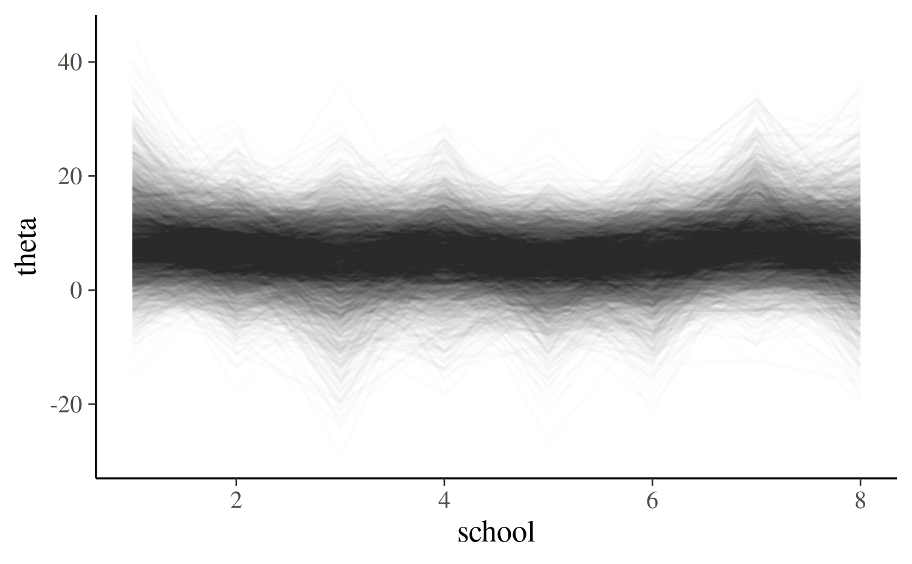

Summary statistics
We can easily customize the summary statistics reported by
$summary() and $print().
fit <- cmdstanr_example("schools_ncp", method = "sample")
fit$summary()# A tibble: 19 × 10
variable mean median sd mad q5 q95 rhat ess_bulk ess_tail
<chr> <dbl> <dbl> <dbl> <dbl> <dbl> <dbl> <dbl> <dbl> <dbl>
1 lp__ -46.9 -46.6 2.47 2.33 -51.4 -43.4 1.00 1524. 2291.
2 mu 6.44 6.52 4.15 4.03 -0.411 13.3 1.00 3505. 2446.
3 tau 4.66 3.91 3.56 3.42 0.393 11.5 1.00 2078. 1851.
4 theta_r… 0.360 0.366 0.961 0.957 -1.24 1.89 1.00 5127. 2867.
5 theta_r… 0.0415 0.0604 0.933 0.936 -1.49 1.58 1.00 4762. 2734.
6 theta_r… -0.157 -0.155 0.978 0.995 -1.74 1.44 1.00 5327. 3101.
7 theta_r… 0.0166 0.0162 0.929 0.924 -1.53 1.49 1.00 5274. 3101.
8 theta_r… -0.270 -0.290 0.911 0.885 -1.75 1.28 1.000 4878. 2922.
9 theta_r… -0.141 -0.148 0.915 0.892 -1.62 1.39 1.00 5109. 3112.
10 theta_r… 0.392 0.417 0.924 0.930 -1.15 1.88 1.00 4824. 3129.
11 theta_r… 0.0741 0.0849 0.941 0.953 -1.45 1.59 1.00 5619. 2869.
12 theta[1] 8.85 8.10 6.54 5.71 -0.493 20.6 1.00 4440. 3343.
13 theta[2] 6.81 6.80 5.35 4.92 -2.10 15.6 1.00 5222. 2813.
14 theta[3] 5.44 5.78 6.50 5.67 -5.52 15.1 1.00 4328. 3269.
15 theta[4] 6.54 6.58 5.74 5.21 -2.76 15.8 1.000 4382. 3278.
16 theta[5] 4.85 5.10 5.51 4.96 -4.63 13.3 1.00 4147. 3454.
17 theta[6] 5.57 5.75 5.68 5.25 -4.04 14.3 1.00 5029. 3322.
18 theta[7] 8.80 8.35 5.94 5.37 0.185 19.4 1.00 4817. 3726.
19 theta[8] 6.90 6.79 6.34 5.65 -3.17 17.1 1.00 4708. 3289.By default, all variables are summarized with the following functions:
posterior::default_summary_measures()[1] "mean" "median" "sd" "mad" "quantile2"To change the variables summarized, use the variables
argument:
fit$summary(variables = c("mu", "tau", "theta"))# A tibble: 10 × 10
variable mean median sd mad q5 q95 rhat ess_bulk ess_tail
<chr> <dbl> <dbl> <dbl> <dbl> <dbl> <dbl> <dbl> <dbl> <dbl>
1 mu 6.44 6.52 4.15 4.03 -0.411 13.3 1.00 3505. 2446.
2 tau 4.66 3.91 3.56 3.42 0.393 11.5 1.00 2078. 1851.
3 theta[1] 8.85 8.10 6.54 5.71 -0.493 20.6 1.00 4440. 3343.
4 theta[2] 6.81 6.80 5.35 4.92 -2.10 15.6 1.00 5222. 2813.
5 theta[3] 5.44 5.78 6.50 5.67 -5.52 15.1 1.00 4328. 3269.
6 theta[4] 6.54 6.58 5.74 5.21 -2.76 15.8 1.000 4382. 3278.
7 theta[5] 4.85 5.10 5.51 4.96 -4.63 13.3 1.00 4147. 3454.
8 theta[6] 5.57 5.75 5.68 5.25 -4.04 14.3 1.00 5029. 3322.
9 theta[7] 8.80 8.35 5.94 5.37 0.185 19.4 1.00 4817. 3726.
10 theta[8] 6.90 6.79 6.34 5.65 -3.17 17.1 1.00 4708. 3289.We can also change which functions are used:
fit$summary(variables = c("mu", "tau"), mean, sd)# A tibble: 2 × 3
variable mean sd
<chr> <dbl> <dbl>
1 mu 6.44 4.15
2 tau 4.66 3.56To summarize all variables with non-default functions, it is
necessary to explicitly set the variables argument, either
to NULL or the full vector of variable names.
fit$summary(variables = NULL, "mean", "median")# A tibble: 19 × 3
variable mean median
<chr> <dbl> <dbl>
1 lp__ -46.9 -46.6
2 mu 6.44 6.52
3 tau 4.66 3.91
4 theta_raw[1] 0.360 0.366
5 theta_raw[2] 0.0415 0.0604
6 theta_raw[3] -0.157 -0.155
7 theta_raw[4] 0.0166 0.0162
8 theta_raw[5] -0.270 -0.290
9 theta_raw[6] -0.141 -0.148
10 theta_raw[7] 0.392 0.417
11 theta_raw[8] 0.0741 0.0849
12 theta[1] 8.85 8.10
13 theta[2] 6.81 6.80
14 theta[3] 5.44 5.78
15 theta[4] 6.54 6.58
16 theta[5] 4.85 5.10
17 theta[6] 5.57 5.75
18 theta[7] 8.80 8.35
19 theta[8] 6.90 6.79 Summary functions can be specified by character string, function, or
using a formula (or anything else supported by
rlang::as_function()). If these arguments are named, those
names will be used in the tibble output. If the summary results are
named they will take precedence.
my_sd <- function(x) c(My_SD = sd(x))
fit$summary(
c("mu", "tau"),
MEAN = mean,
"median",
my_sd,
~quantile(.x, probs = c(0.1, 0.9)),
Minimum = function(x) min(x)
) # A tibble: 2 × 7
variable MEAN median My_SD `10%` `90%` Minimum
<chr> <dbl> <dbl> <dbl> <dbl> <dbl> <dbl>
1 mu 6.44 6.52 4.15 1.13 11.6 -8.19
2 tau 4.66 3.91 3.56 0.758 9.50 0.00431Arguments to all summary functions can also be specified with
.args.
# A tibble: 2 × 5
variable `2.5%` `5%` `95%` `97.5%`
<chr> <dbl> <dbl> <dbl> <dbl>
1 mu -1.87 -0.411 13.3 14.5
2 tau 0.212 0.393 11.5 13.3Each summary function is applied separately to each variable and receives a matrix whose rows are saved iterations and whose columns are chains.
fit$summary(variables = "theta", dim, colMeans)# A tibble: 8 × 7
variable dim.1 dim.2 `1` `2` `3` `4`
<chr> <dbl> <dbl> <dbl> <dbl> <dbl> <dbl>
1 theta[1] 1000 4 8.86 8.95 8.87 8.70
2 theta[2] 1000 4 6.71 6.94 6.76 6.82
3 theta[3] 1000 4 5.51 5.69 5.44 5.14
4 theta[4] 1000 4 6.40 6.66 6.72 6.40
5 theta[5] 1000 4 4.70 5.00 4.97 4.72
6 theta[6] 1000 4 5.52 5.72 5.60 5.45
7 theta[7] 1000 4 9.12 8.86 8.70 8.52
8 theta[8] 1000 4 7.23 6.58 6.80 6.98For this reason users may have unexpected results if they use
stats::var() directly, as it will return a covariance
matrix. An alternative is the distributional::variance()
function, which can also be accessed via
posterior::variance().
# A tibble: 2 × 3
variable `posterior::variance` `~var(as.vector(.x))`
<chr> <dbl> <dbl>
1 mu 17.2 17.2
2 tau 12.7 12.7Summary functions need not return numeric values when used with
$summary(). The $print() method requires
numeric summary columns because it rounds them to the requested number
of digits.
strict_pos <- function(x) if (all(x > 0)) "yes" else "no"
fit$summary(variables = c("mu", "tau", "theta"), "Strictly Positive" = strict_pos)# A tibble: 10 × 2
variable `Strictly Positive`
<chr> <chr>
1 mu no
2 tau yes
3 theta[1] no
4 theta[2] no
5 theta[3] no
6 theta[4] no
7 theta[5] no
8 theta[6] no
9 theta[7] no
10 theta[8] no
# fit$print(variables = NULL, "Strictly Positive" = strict_pos)For more information, see posterior::summarise_draws(),
which is called internally by $summary().
Extracting posterior draws/samples
The $draws()
method extracts draws in formats provided by the posterior
package. The Getting
started with CmdStanR vignette introduces the most commonly
used formats and how to convert between them.
fit$draws("mu")# A draws_array: 1000 iterations, 4 chains, and 1 variables
, , variable = mu
chain
iteration 1 2 3 4
1 14.2 3.45 5.6 5.3
2 6.8 8.89 6.2 7.8
3 6.9 17.76 7.1 9.3
4 5.0 -0.55 5.9 11.5
5 8.2 7.52 7.6 -1.2
# ... with 995 more iterations
fit$draws("theta")# A draws_array: 1000 iterations, 4 chains, and 8 variables
, , variable = theta[1]
chain
iteration 1 2 3 4
1 21.2 3.81 5.2 4.7
2 8.0 8.93 6.7 16.0
3 5.0 17.79 6.3 14.0
4 16.6 0.62 17.4 12.0
5 8.2 9.42 5.6 1.3
, , variable = theta[2]
chain
iteration 1 2 3 4
1 20.3 7.2 5.2 6.5
2 10.2 8.8 8.8 11.4
3 7.8 16.8 4.3 12.0
4 -2.6 1.2 13.4 12.0
5 8.6 8.4 5.4 -1.6
, , variable = theta[3]
chain
iteration 1 2 3 4
1 12.58 1.8 5.2 9.6
2 4.35 8.9 6.8 6.3
3 -0.36 22.1 6.7 9.2
4 3.72 -6.0 7.2 10.6
5 8.56 6.7 6.4 -3.8
, , variable = theta[4]
chain
iteration 1 2 3 4
1 9.4 2.8 5.3 4.1
2 4.1 8.9 8.1 4.4
3 5.7 16.3 6.4 7.4
4 12.5 2.0 7.7 11.2
5 7.6 6.9 6.6 -1.4
# ... with 995 more iterations, and 4 more variables
fit$draws(c("mu", "theta[1]"), format = "df")# A draws_df: 1000 iterations, 4 chains, and 2 variables
mu theta[1]
1 14.198 21.2
2 6.844 8.0
3 6.852 5.0
4 4.989 16.6
5 8.203 8.2
6 4.941 5.0
7 9.005 9.0
8 10.097 13.5
9 5.247 2.4
10 -0.095 5.2
# ... with 3990 more draws
# ... hidden reserved variables {'.chain', '.iteration', '.draw'}For MCMC fits, inc_warmup = TRUE includes warmup draws,
but only if save_warmup = TRUE was specified when fitting
the model.
For more ways to manipulate draws, see the posterior package vignettes and documentation.
Structured draws similar to rstan::extract()
The posterior package provides two useful ways to work with variables while preserving their original dimensions.
posterior::extract_list_of_variable_arrays() returns a
named list containing one array per variable. Setting
with_chains = FALSE combines the chains, giving the same
general structure as the list returned by
rstan::extract():
draw_arrays <- extract_list_of_variable_arrays(
fit$draws(),
variables = c("mu", "theta"),
with_chains = FALSE
)
str(draw_arrays)List of 2
$ mu : num [1:4000, 1] 14.2 6.84 6.85 4.99 8.2 ...
..- attr(*, "dimnames")=List of 2
.. ..$ : chr [1:4000] "1" "2" "3" "4" ...
.. ..$ : NULL
$ theta: num [1:4000, 1:8] 21.23 7.95 5.03 16.63 8.22 ...
..- attr(*, "dimnames")=List of 2
.. ..$ : chr [1:4000] "1" "2" "3" "4" ...
.. ..$ : NULL
dim(draw_arrays$theta)[1] 4000 8The first dimension of each array indexes draws, and any remaining dimensions match the dimensions of the corresponding Stan variable.
Alternatively, the posterior package’s
rvar format represents each variable as a multidimensional
random variable, with its posterior draws handled behind the scenes:
draws_rvars <- as_draws_rvars(
fit$draws(c("mu", "theta"))
)
theta_rvar <- draws_rvars$theta
# Compute the difference for every draw using natural vector indexing
# The posterior draws are handled automatically
theta_difference <- theta_rvar[1] - theta_rvar[2]
theta_differencervar<1000,4>[1] mean ± sd:
[1] 2 ± 6.9
hist(
draws_of(theta_difference),
main = "Difference between theta[1] and theta[2]",
xlab = "theta[1] - theta[2]"
)
# Direct access to the underlying draws is also available with posterior::draws_of
theta_array <- draws_of(theta_rvar)
dim(theta_array)[1] 4000 8The object theta_rvar behaves like the vector declared
in the Stan program. theta_array provides direct access to
its underlying draws, with the first dimension indexing draws. See the
rvar
vignette for details.
Plotting the draws of a vector
Because theta_array has draws in the first dimension and
the vector index (the eight schools) in the second, we can reshape it
into a long data frame and overlay the individual draws.
theta_plot <- draw_arrays$theta
theta_df <- data.frame(
.draw = rep(seq_len(nrow(theta_plot)), times = ncol(theta_plot)),
school = rep(seq_len(ncol(theta_plot)), each = nrow(theta_plot)),
theta = c(theta_plot)
)
ggplot(theta_df, aes(school, theta, group = .draw)) +
geom_line(alpha = 0.01)
The reshaping above uses only base R. Tidyverse users can produce the
same plot directly from the draws data frame
(format = "df") with tidyr::pivot_longer(),
extracting the vector index from variable names like
theta[1]:
fit$draws("theta", format = "df") |>
tidyr::pivot_longer(
cols = dplyr::starts_with("theta"),
names_to = "school",
names_transform = readr::parse_number,
values_to = "theta"
) |>
ggplot(aes(school, theta, group = .draw)) +
geom_line(alpha = 0.01)Here school is simply the index into the
theta vector. In many models the vector index corresponds
to a meaningful covariate, for example the time points of a time series.
In that case you can replace school with the associated
covariate values to plot each draw as a function of that covariate.